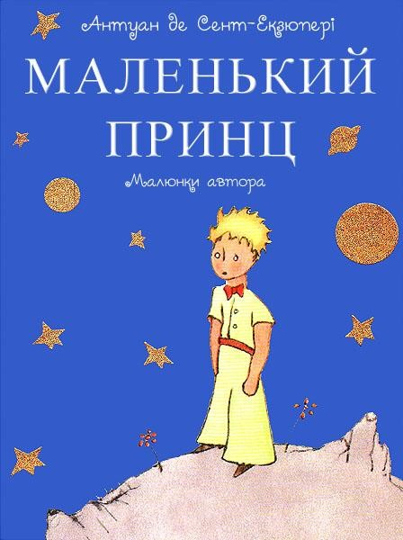

Розмітка заголовків
HTML пропонує шість заголовків різного рівня, які показують відносну важливість розділу, розташованого після заголовка. За замовчуванням, заголовок першого рівня відображається найбільшим шрифтом жирного зображення, заголовки наступного рівня за розміром менше.
<h1> - заголовок найвищого рівня. Бажано використовувати на сторінці лише один раз.
<h2> - <h6> - заголовки нижчих рівнів, які розташовані за спаданням їх важливості.
Синтаксис
<h1>Заголовок першого рівня</h1>
<h2>Заголовок другого рівня</h2>
<h3>Заголовок третього рівня</h3>
<h4>Заголовок четвертого рівня</h4>
<h5>Заголовок п'ятого рівня</h5>
<h6>Заголовок шостого рівня</h6>
Результат
Заголовок першого рівня
Заголовок другого рівня
Заголовок третього рівня
Заголовок четвертого рівня
Заголовок п'ятого рівня
Заголовок шостого рівня
Теги для форматування тексту
Тег <strong>
<strong> - виділяє важливий текст, відображається жирним шрифтом. Важлива пропозиція має велике
значення для всієї веб-сторінки, що вказує на щось серйозне або термінове. Важливе слово або словосполучення показує,
що воно має більше значення, ніж оточуючий текст. Браузери відображають текст усередині <strong>
жирним шрифтом.
Синтаксис
<strong>Текст</strong>
Результат
Елемент <strong> виділяє важливий текст, відображається жирним
шрифтом.
Тег <em>
<em> - призначений для тексту, що має особливе значення або на який слід наголосити. Текст
всередині <em> відображається курсивом.
Синтаксис
<em>Текст</em>
Результат
Призначений для тексту, що має особливе значення.
Тег <small>
<small> - зменшує розмір шрифту на одиницю в порівнянні зі звичайним текстом. У HTML4 розмір шрифту
вимірюється в умовних одиницях від 1 до 7, середній розмір тексту, який використовується за замовчуванням, прийнятий 3.
Таким чином, додавання <small> зменшує текст на одну умовну одиницю. Допускається застосування
вкладених елементів <small>, при цьому розмір шрифту буде меншим з кожним вкладеним рівнем, але не
може бути меншим, ніж 1..
Синтаксис
<small>Текст</small>
Результат
HTML4 <small> зменшує розмір шрифту на одиницю в порівнянні зі звичайним текстом.
Тег <ins>
<ins> - призначений для виділення тексту, який було додано до нової версії документа. Таке форматування дозволяє
відстежити, які зміни в тексті документа були зроблені. Браузери зазвичай позначають текст у контейнері
<ins> як підкреслений.
Синтаксис
<ins>Текст</ins>
Результат
Елемент <ins> призначений для виділення тексту, доданого до нової версії документа.
Тег <del>
<del> - використовується для виділення тексту, видаленого в новій версії документа. Подібне
форматування дозволяє відстежити, які зміни у тексті документа було зроблено. Браузери зазвичай позначають текст
у контейнері <del> як перекреслений.
Синтаксис
<del>Текст</del>
Результат
Елемент <del> використовується для виділення тексту, видаленого в новій версії документа.
Тег <sub>
<sub> - відображає шрифт як нижній індекс. Текст при цьому розташовується нижче за базову лінію
інших символів рядка і зменшеного розміру.
Синтаксис
<sub>Текст</sub>
Результат
Формула мурашиної кислоти: CH2O2
Тег <sup>
<sup> - відображає шрифт у вигляді верхнього індексу. Шрифт при цьому відображається вище базової
лінії тексту та зменшеного розміру.
Синтаксис
<sup>Текст</sup>
Результат
Формула квадратного рівняння: а2 + bx + c = 0
Тег <code>
<code> - призначений для відображення одного або декількох рядків тексту, який є програмним кодом.
Сюди відносяться імена змінних, ключові слова, тексти функції тощо. Браузери зазвичай відображають вміст
контейнера <code> як моноширинний текст зменшеного розміру.
Синтаксис
<code>Текст</code>
Результат
HTML4 <small> зменшує розмір шрифту на одиницю в порівнянні зі звичайним текстом.
Тег <kbd>
<kbd> - використовується для позначення тексту, який набирається на клавіатурі або назви
клавіш. Браузери зазвичай позначають текст у контейнері <kbd> моноширинним шрифтом.
Синтаксис
<kbd>Текст</kbd>
Результат
Для копіювання використуваються клавіші Ctrl + C
Тег <samp>
<samp> - використовується для відображення тексту, який є результатом виведення комп'ютерної
програми чи скрипту. Браузери зазвичай відображають текст у контейнері <samp> за допомогою
моноширинного шрифту.
Синтаксис
<samp>Текст</samp>
Результат
Якщо на комп'ютері встановлена система контролю версій git, то для перевірки її версії треба ввести в командному
рядку git --version . Після цього можна отримати такий результат: version 2.34.0.windows.1.
Тег <pre>
<pre> - визначає блок попередньо форматованого тексту. Такий текст зазвичай відображається
моноширинним шрифтом і з усіма пробілами між словами. За замовчуванням, будь-яка кількість пробілів, що йдуть у
коді поспіль, на веб-сторінці відображається як один. Елемент <pre> дозволяє обійти цю особливість та відображати
текст як потрібно розробнику.
Синтаксис
<pre>Текст</pre>
Результат
---- ----
| | | |
---- ----
?
---------
Цитати, означення, аббревіатури
Тег <dfn>
Як правило, у документі, коли згадується новий термін, він виділяється курсивом та дається його визначення. При використанні цього терміну надалі він вважається вже відомим читачеві.
<dfn> - застосовується для виділення таких термінів при їх першій появі у тексті.
Браузери зазвичай відображають вміст контейнера <dfn> за допомогою курсивного шрифту.
Синтаксис
<dfn>Текст</dfn>
Результат
Програмування — процес проектування, написання, тестування, зневадження і підтримки комп'ютерних програм.
Тег <abbr>
<abbr> - показує, що послідовність символів є абревіатурою. За допомогою атрибуту <title> дається
розшифровка скорочення, що дозволяє розуміти абревіатуру тим людям, які з нею не знайомі. Крім того, пошукові
системи індексують повнотекстовий варіант скорочення, це може використовуватись для підвищення рейтингу документа.
Браузери зазвичай додають до тексту пунктирне підкреслення, але можуть і не виділяти вміст елемента.
Синтаксис
<abbr>Текст</abbr>
Результат
ООН — глобальна міжнародна організація, заснована 24 жовтня 1945 на конференції в Сан-Франциско на підставі Хартії Об'єднаних Націй.
Тег <q>
<q> - використовується для виділення у тексті цитат. Вміст контейнера автоматично відображається у
браузері у лапках.
Синтаксис
<q>Текст</q>
Результат
Як казав Тарас Шевченко: В своїй хаті своя й правда, І сила, і воля
.
Тег <cite>
<cite> - представляє назву творчої роботи (книги, статті, поеми, сценарію, фільми, пісні,
опери, ігри та ін.). Це може бути твір, на який посилаються у цитаті, чи просто згадана робота. <cite>
зазвичай поєднується з цитатами, зокрема з елементом <blockquote> і вказує назву твору,
з якого взята цитата. Браузери зазвичай виділяють текст усередині курсивом.
Синтаксис
<cite>Текст</cite>
Результат
Джордж Клейсон у 1926 році видав збірку притч про фінансовий успіх Найбагатший чоловік у Вавилоні.
Тег <blockquote>
<blockquote> - призначений для виділення довгих цитат усередині документа.
Текст усередині <blockquote> відображається як вирівняний блок з відступами ліворуч та праворуч
(по 40 пікселів), а також з відбивкою зверху та знизу.
Синтаксис
<blockquote>Текст</blockquote>
Результат
Андре Поль Гійом Жид - французький письменник, прозаїк, драматург і есеїст, який вплинув не тільки на французьку літературу XX століття, але і на умонастрої декількох поколінь французів. Лауреат Нобелівської премії з літератури.
Один із законів життя свідчить, що як тільки закриваються одні двері, відкриваються інші. Але вся біда в тому, що ми дивимося на замкнуті двері і не звертає уваги на ті, що відкрилися.
Розмітка коду
Тег <hr>
<hr> - малює горизонтальну лінію, яка за своїм виглядом залежить від параметрів, що
використовуються, а також браузера.
Синтаксис
<hr>
Результат
<hr> малює горизонтальну лінію, яка за своїм виглядом залежить від параметрів, що використовуються,
а також браузера.
Спеціальний символ  
  - нерозривний пробіл.
Синтаксис
 
Результат
Спеціальний символ
Спеціальний символ ©
© - знак copyright.
Синтаксис
©
Результат
©Спеціальний символ
Спеціальний символ &trade
&trade - знак торгової марки.
Синтаксис
&trade
Результат
™Спеціальний символ
Спеціальний символ &
& - амперсанд.
Синтаксис
&
Результат
&Спеціальний символ
Спеціальний символ <
< - знак "менше ніж" (початок тега).
Синтаксис
<
Результат
<Спеціальний символ
Спеціальний символ >
> - знак "більше ніж" (кінець тега).
Синтаксис
>
Результат
>Спеціальний символ
Списки
Тег <ul>
<ul> - встановлює маркований список. Кожен пункт списку повинен починатися з <li>.
Синтаксис
<ul>
<li>пункт маркованого списку<li>
</ul>
Результат
- Понеділок
- Вівторок
- Середа
- Четвер
- П'ятниця
- Субота
- Неділя
Тег <ol>
<ol> - встановлює нумерований перелік. Кожен елемент списку має починатися з
<li>. Якщо <ol> застосовує таблицю стилів, то елементи <li>
успадковують ці властивості.
Синтаксис
<ol>
<li>пункт нумерованого списку<li>
</ol>
Результат
- Понеділок
- Вівторок
- Середа
- Четвер
- П'ятниця
- Субота
- Неділя
Тег <li>
<li> - визначає окремий пункт переліку. Зовнішній елемент <ul> або <ol>
встановлює тип списку – маркований чи нумерований.
Синтаксис
<ol>
<li>пункт нумерованого списку<li>
</ol>
<ul>
<li>пункт маркерованого списку<li>
</ul>
Результат
- Понеділок
- Вівторок
- Середа
- Четвер
- П'ятниця
- Субота
- Неділя
Зображення
Тег <img>
<img> - призначений для відображення на веб-сторінці зображень у графічному форматі GIF,
JPEG, SVG або PNG. Адреса файлу з зображенням задається через атрибут src. Якщо необхідно, малюнок можна
зробити посиланням на інший файл, помістивши <img> у контейнер <a>.
Синтаксис
<img src="<адреса>" alt="<адреса>">
Результат

Гіперпосилання
Тег <a>
<a> - є одним з важливих в HTML і призначений для створення посилань. Для цього необхідно
повідомити браузер, що є посиланням, а також вказати адресу документа, на який слід зробити посилання.
Як атрибут <href> використовується адреса документа, на який відбувається перехід. Адреса
посилання може бути абсолютною та відносною. Абсолютні адреси працюють скрізь і всюди незалежно від імені сайту
або веб-сторінки, де прописано посилання. Відносні посилання, як випливає з їхньої назви, побудовані щодо поточного
документа чи кореня сайту.
Синтаксис
<a href="<адреса>">...</a>
Результат
Розриви
Тег <br>
<br> - встановлює переведення рядка в тому місці, де він знаходиться. На відміну від
елемента <p>, використання <br> не додає порожній відступ перед рядком.
Синтаксис
Текст<br>текст
Результат
Т. Г. Шевченко
За сонцем хмаронька пливе,
Червоні поли розстилає
І сонце спатоньки зове
У синє море: покриває
Рожевою пеленою,
Мов мати дитину.